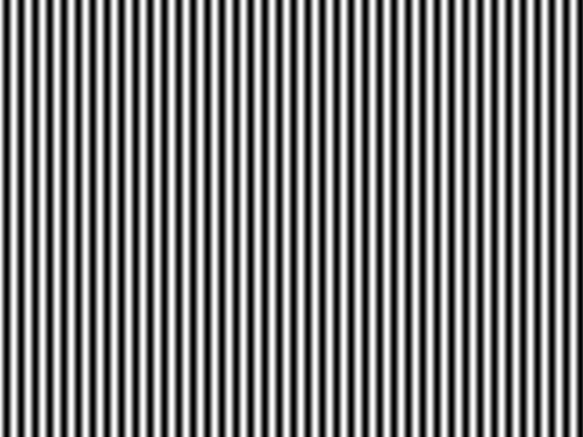
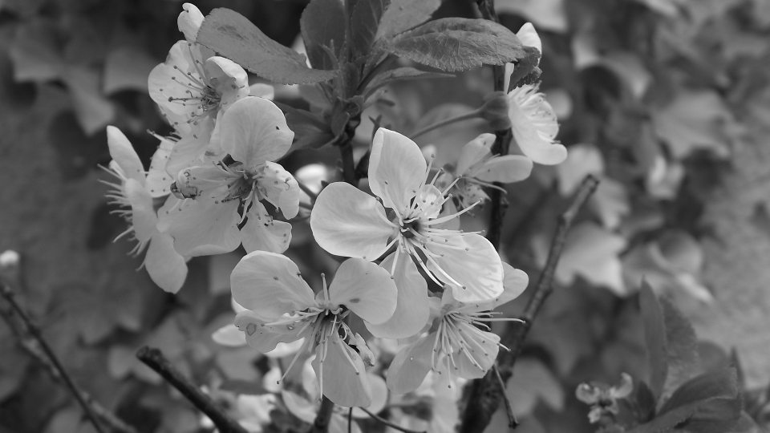
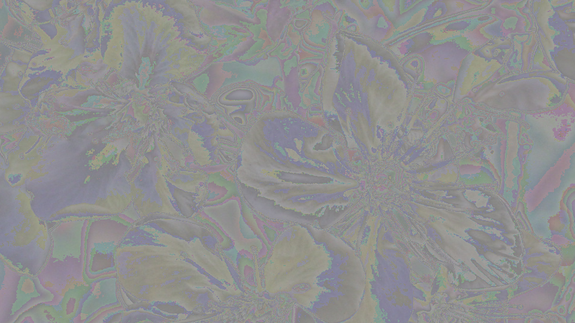

Bescheibung
Nun lies die Bilder mit bmp_io ein und erklaere die Angaben im Header, die auf der Konsole ausgegeben werden! Wie erklaert sich die Dateigroesse für die beiden Dateien?
|
|
 | |
Loesung
Headerangaben:
Grating_h6 | Grating_v2
Dateigroesse: 921.654 bytes
Bits pro Pixel 24
Hoehe: 640
Breite: 480
manmade_06 | nature_06
Dateigroesse: 1.555.254 bytes
Bits pro Pixel 24
Hoehe: 960
Breite: 540
Loesung
Bescheibung
Modifiziere bmp_io dahingehend, dass die RGB Werte der einzelnen Pixel in der BMP-Datei in eine (lesbare) ASCII-Datei geschrieben werden. Es reichen dabei jeweils eine Zeile und eine Spalte! Lies die von mir geschickten Testdateien ein und schätze aus den resultierenden Zahlenfolgen die Periodendauer in Pixeln in horizontaler und vertikaler Richtung. (Jeweils eine Periode horizontal und eine vertikal für das Übungsprotokoll abspeichern).
Loesung
try (FileOutputStream fosh = new FileOutputStream("horizontal.txt");
OutputStreamWriter oswh = new OutputStreamWriter(fosh, "US-ascii");
BufferedWriter bwh = new BufferedWriter(oswh)) {
// BGR schreiben horizontal 2.1.
for (int x = 0; x < bmp.image.getWidth(); x++) {
int rAmount = bmp.image.getRgbPixel(x, 0).r;
int gAmount = bmp.image.getRgbPixel(x, 0).g;
int bAmount = bmp.image.getRgbPixel(x, 0).b;
bwh.write(rAmount + " " + gAmount + " " + bAmount);
bwh.newLine();
}
} catch (IOException e) {
e.printStackTrace();
}
try (FileOutputStream fosv = new FileOutputStream("vertikal.txt");
OutputStreamWriter oswv = new OutputStreamWriter(fosv, "US-ascii");
BufferedWriter bwv = new BufferedWriter(oswv)) {
// BGR schreiben vertikal 2.1.
for (int y = 0; y < bmp.image.getHeight(); y++) {
int rAmount = bmp.image.getRgbPixel(0, y).r;
int gAmount = bmp.image.getRgbPixel(0, y).g;
int bAmount = bmp.image.getRgbPixel(0, y).b;
bwv.write(rAmount + " " + gAmount + " " + bAmount);
bwv.newLine();
}
} catch (IOException e) {
e.printStackTrace();
}
Grating_V2 Ascii horizontal Ergebnisausschnitt:
Grating_V2 Ascii vertikal Ergebnisausschnitt:
Grating_H6 Ascii horizontal Ergebnisausschnitt:
Grating_H6 Ascii vertikal Ergebnisausschnitt:
Beschreibung
Auch bei der Bildabtastung muss das sogenannte Abtasttheorem eingehalten werden. Wie lautet es und wie laesst sich der Grenzfall, für den es gerade noch gilt, illustrieren (Zeichnung !)?
Loesung
Das Abtasttheorem, auch als Nyquist-Shannon-Abtasttheorem bekannt, besagt, dass für eine zuverlässige Wiederherstellung eines Signals aus seinen Abtastwerten die Abtastfrequenz mindestens doppelt so hoch sein muss wie die höchste Frequenzkomponente im Signal.
(f_a >= 2 * f_max), sonst kann aliasing auftauchen

In diesem Plot repräsentieren die "x"-Symbole die Abtastpunkte des Sinussignals.
Du kannst sehen, dass die Abtastpunkte genau auf der Sinuskurve liegen.
Dies entspricht der optimalen Abtastung gemäß dem Abtasttheorem.
Wenn jedoch die Abtastfrequenz leicht unter 2 * f_max liegt,
führt dies zu Alias-Effekten. In diesem Fall würden die Abtastpunkte nicht
mehr genau auf der Sinuskurve liegen und es würde zu Verzerrungen oder falscher
Darstellung des Signals kommen.
Beschreibung
Erzeuge aus deinen eigenen Farbbildern Graustufen-Bilder.
Dazu muss der Helligkeitswert Y aus den RGB-Werten errechnet werden.
Es gibt dafür verschiedene Ansätze.
Nutze die Formel Y= 0,3 x R + 0,6 x G + 0,1 x B, die die Helligkeitsempfindlichkeit
des Auges annähert. Mit diesem Y-Wert wird dann die R, G und B-Information überschrieben.
Speichere die Graustufenbilder ab.
Loesung
|  |
for (int y = 0; y < bmp.image.getHeight(); y++) {
for (int x = 0; x < bmp.image.getWidth(); x++) {
int rAmount = bmp.image.getRgbPixel(x, y).r;
int gAmount = bmp.image.getRgbPixel(x, y).g;
int bAmount = bmp.image.getRgbPixel(x, y).b;
int grey = (int) Math.round(0.3 * rAmount + 0.6 * gAmount + 0.1 * bAmount);
PixelColor greyPixel = new PixelColor(grey, grey, grey);
bmp.image.setRgbPixel(x, y, greyPixel);
}
}
Beschreibung
Erkläre, wie bei Bild- und Videoaufnahmen Aliasing entstehen kann. Ähnlich wie bei der 1. Übung am Audiosignal wollen wir auf das Bild ein Down-Sampling anwenden und sehen, wann dabei Aliasing auftritt. Beim Audiosignal haben wir jedes zweite Sample verworfen und damit die Abtastfrequenz halbiert. Beim Bild verringern wir die räumliche Auflösung, indem wir die Zahl der Bildzeilen bzw. Bildspalten verringern. Dabei wollen wir das Bild allerdings nicht verkleinern - was normalerweise die Folge wäre - sondern einfach die ungeradzahligen Spalten durch den Inhalt der geradzahligen Spalten ersetzen, d.h. Spalte 1 wird durch Spalte 0 ersetzt, Spalte 3 durch Spalte 2 etc. und analog für die Zeilen. Wenn das Ursprungsbild nun sehr feine Strukturen aufweist, wie in machen Testdateien, können Aliasing-Verzerrungen sichtbar werden. Achte darauf, dass stets Rot, Grün und Blau getrennt manipuliert werden müssen.
Aliasing tritt bei Bild- und Videoaufnahmen auf, wenn die Abtastung oder Auflösung des Bildes nicht ausreicht, um feine Details oder Muster mit hoher Frequenz genau darzustellen. Im Zusammenhang mit der Bildverkleinerung tritt Aliasing auf, wenn wir die räumliche Auflösung reduzieren, indem wir die Anzahl der Bildzeilen oder -spalten verringern.
Wenn das ursprüngliche Bild feine Strukturen oder Details mit hoher Frequenz enthält, wie zum Beispiel dünnen Linien oder Mustern, können Aliasing-Verzerrungen sichtbar werden. Dies liegt daran, dass die reduzierte räumliche Auflösung nicht ausreicht, um diese Details genau darzustellen, was zu Artefakten oder Verzerrungen führt. Diese können als gezackte Kanten, Moiré-Muster oder Unschärfeerscheinungen in Erscheinung treten.
Loesung
Beschreibung
Modifiziere bmp_io dahingehend, dass zunächst in jeder Zeile des eingelesenen Bilds jedes ungeradzahlige Pixel durch das davor liegende geradzahlige Pixel ersetzt wird (horizontales Down-Sampling). Diese Veränderung hat natürlich nur bei einem der beiden Testbilder Sinn (warum?). Speichere das resultierende Bild ab. Da sich die Bildgröße bei dieser Operation nicht ändert, muss der Bild-Header auch nicht verändert werden. Falls du im Ergebnis keine Veränderung sehen kannst, ersetze mehr Spalten, also Spalte 1 und 2 durch Spalte 0, dann Spalte 1, 2 und 3 durch Spalte 0 usw. Wende diese Manipulation auf die Testbilder an, bis du eine Veränderung in Form eines Moiré-Musters siehst. Notiere, bei welcher Verringerung du die Veränderungen beobachtest und beschreibe die Veränderungen! Erkläre das Ergebnis an Hand der von dir bestimmten Periodendauer in Pixeln.
Loesung
downsample bis Moiré-Effekt
horizontal downsample 2x grating_V2
vertikal downsample 9x grating_H6
for (int y = 0; y < bmp.image.getHeight(); y++) {
for (int x = 0; x < bmp.image.getWidth(); x++) {
// Horizontal
if (x % 4 != 0) {
PixelColor pixel = bmp.image.getRgbPixel(x - 1, y);
bmp.image.setRgbPixel(x, y, pixel);
}
}
}
for (int y = 0; y < bmp.image.getHeight(); y++) {
for (int x = 0; x < bmp.image.getWidth(); x++) {
// Vertikal
if (y % 2 != 0) {
PixelColor pixel = bmp.image.getRgbPixel(x, y - 1);
bmp.image.setRgbPixel(x, y, pixel);
}
}
}
horizontal downsample nature_06 bis signifikanter verlusst an qualität
Beschreibung
Wir wollen nun bmp_io so modifizieren, dass wir die Bitzahl reduzieren können. Dazu können wir z.B. alle RGB-Werte durch eine Potenz von 2 teilen (Integer-Division ohne Rest). Damit das resultierende Bild nicht dunkler wird als das Original, kompensieren wir die Operation durch Multiplikation mit derselben Zweierpotenz. Zu beachten: Der Datentyp hat nach wie vor eine Bittiefe von 24Bit (8bit pro Farbe!)
Mit dem entstandenen Programm verändern wir die in Aufgabe 1 erzeugten BMP-Dateien. Ab welcher Bitzahl tritt beim Detail-Bild und beim Flächen-Bild eine sichtbare Verschlechterung der Qualität ein? Wie kann man diese Verschlechterung am besten beschreiben? (Alle Ergebnisbilder ins Übungsprotokoll)
Loesung
int reducedBits = 16;
for (int y = 0; y < bmp.image.getHeight(); y++) {
for (int x = 0; x < bmp.image.getWidth(); x++) {
int r = bmp.image.getRgbPixel(x, y).r;
int g = bmp.image.getRgbPixel(x, y).g;
int b = bmp.image.getRgbPixel(x, y).b;
int rNew = r / reducedBits;
int gNew = g / reducedBits;
int bNew = b / reducedBits;
PixelColor color = new PixelColor(rNew * reducedBits, gNew * reducedBits, bNew * reducedBits);
bmp.image.setRgbPixel(x, y, color);
}
}
Beschreibung
Modifiziere dein Programm noch einmal so, dass auch das Differenzbild zwischen Original und bitreduziertem Bild, das heißt das Fehlerbild ausgegeben, werden kann. Dabei musst du auch bedenken, dass z.B. bei 1 Bit Reduzierung der Fehler nur 0 oder 1 wäre. Dieser Wertebereich wäre viel zu klein, als dass man ihn in der 8bit-Grafik noch sehen könnte. Daher muss der Fehler durch Multiplikation mit einer 2er Potenz verstärkt werden. In anderen Worten: Hat man vorher durch 2^n geteilt, sollte man das Differenzsignal mit 2^(8-n-1) multiplizieren. So ist sichergestellt, dass der Verstärkungsfaktor mit der Anzahl der gelöschten Bits kleiner wird. Beachte außerdem, dass bei der Differenzbildung der Wert 0 Schwarz entspricht, während die Null-Linie im Bild-Wertebereich 0...255 aber bei 128, d.h. Mittelgrau, liegt. Daher muss das Differenzbild vor dem Abspeichern durch Addition von 128 in diesen Bereich gebracht werden.
Loesung
|  |
int reducedBits = 32;
int bitsPerColor = 8;
for (int y = 0; y < bmp.image.getHeight(); y++) {
for (int x = 0; x < bmp.image.getWidth(); x++) {
int r = bmp.image.getRgbPixel(x, y).r;
int g = bmp.image.getRgbPixel(x, y).g;
int b = bmp.image.getRgbPixel(x, y).b;
int rNew = r / reducedBits;
int gNew = g / reducedBits;
int bNew = b / reducedBits;
rNew = rNew * reducedBits;
gNew = gNew * reducedBits;
bNew = bNew * reducedBits;
int rDiff = r - rNew;
int gDiff = g - gNew;
int bDiff = b - bNew;
PixelColor color = new PixelColor(rDiff + 128, gDiff + 128, bDiff + 128);
bmp.image.setRgbPixel(x, y, color);
}
}